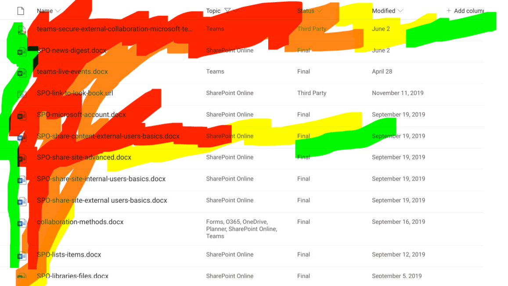

Creating Useful Views for Lists & Libraries
[!include[content-disclaimer](includes/content-disclaimer.md)]All Items
As a SharePoint Site Owner, you benefit directly by having users who find the product useful with a good user experience. Some things you have control over - navigation structure, page structure, content types, and List/Library Views. If you totally ignore what you have influence over, your users might perceive SharePoint as something IT imposed on us. If you lend a hand as Site Owner, you can change that perception. You can be the one who makes Lists/Libraries a joy to work in, a useful thing to work in.
Note
Microsoft Lists is available both in SharePoint and on its own as the Microsoft Lists app.
You should lend a hand to your users by making List/Library default Views meaningful and useful from the start. Users can make their own Views, of course, but by showing them what a good View is like, you can empower them to work efficiently.
Note
This article is left-to-right language focused - and should not be considered best practice for right-to-left languages (like Arabic or Hebrew).
- Get involved and improve this open source article
- Multilingual SharePoint guidance from Microsoft
- SharePoint Online Communication Sites and Pages
How to make a great default View
Set your users up for success when you help them create a List or Library: create an excellent default View. This is as much a UX (User eXperience) thought-process as it is a technical one. Your goal should always be to display only the necessary columns for a user in the default View. Here are the high-level steps to think about:
- Have a firm understanding of what a SharePoint View can do
- Think about how your users might work in the List/Library
- Think about the quantity of items/documents in play
- Think about the devices or platforms being used
- Understand and apply proven UX principles for laying out things on a screen.
- Make that default View!
Understanding List/Library View capability
As a site owner, get yourself up to speed on SharePoint List/Library View features and capabilities. You should know how to show/hide columns, change the sort order, make multiple views, and how to add column choices to the filters pane.
SharePoint Designer Views: If someone told you to make a View in SharePoint Designer, years ago, this was a viable tool for customizing views, but SharePoint Designer is deprecated and will be unsupported in a few years. SharePoint Designer doesn't work with modern SharePoint views.
You should also learn concepts like item/document View metadata filtering and grouping content.
How will your users use this View?
Ask this question: how will users use this View? Is it a document collaboration space? Is it a mini database filled with approval requests? Is it a data source for another application through SharePoint's REST services? Will no humans use ever use the List/Library, but must be supported and maintained? Is it the document repository of record, with lots of reading but few updates?
By taking a beat and thinking about the tasks your users will perform, you'll get a head start on making a useful View.
How many items are in this List/Library?
It can be tough to know the answer to this up front, but once you've been a Site Owner for a few years, you'll get a feel for it. This question lends itself to thinking about performance, pagination in Classic (e.g., 1-30 of 3000 items), folders in Libraries, Grouping content in a View, and data-driven views.
Check the guide to handling Views where there is a lot of content: Living Large with Large Lists and Large Libraries
Where are you users accessing this View?
As Site Owners or developers, we frequently have the privilege of modern equipment, fast connections, and wide-screen monitors. Ask yourself - will your users be accessing this View in mobile device with a small screen? In a low-bandwidth or disconnected area? On an underpowered netbook that's a decade old?
Ask the question, then shrink your monitor down, and put your browser's Developer tools into 3G mode, or mobile simulator mode (Edge, Chrome, Firefox all do this) to simulate the experience. Speed of the user interface is a critical component of good UX, and something you can control in a View with careful planning.
Apply proven User Experience principles to page layouts
Of which there are many, and it's better to think of this as a spectrum rather than a strict technical guideline. For instance: simple is good, but too simple reduces functionality and comprehension. Only displaying the Title column is simple, but not showing the Modified date column might deny your user enough context to act.
Think about:
- Effective Visual Hierarchy - A View is mostly rows and columns, so hierarchy might not be the first thing that comes to mind. But it's there - left-to-right reading, column order (more important columns on the left) and relationship to the filters pane.
Read more about hierarchy: Visual hierarchy in ux design
- Use of color - With Column Formatting and View Formatting there are real opportunities to apply a plethora of color, icon, and font treatments to your default View. Use sparingly to deliver the most impact. If every column and row is colored in, the user can feel overwhelmed instead of informed.
Coloring in rows of data delivers the most impact when its tied to a business goal and provides actionable information to your List/Library user.
Read more about this:
The F-shaped pattern is another classic User Experience principle that directly applies to List/Library Views. The most important, most actionable columns in your default View should be on the left and sorted by what-needs-attention towards the top. If you imagine a large letter F superimposed on the page, this will help you visualize it. User Experience Researchers have used eye tracking to record this phenomenon. Users are reading left-to-right and scanning quickly to find the information they need. Does your View support this?
Read more: F-shaped pattern for reading content
Here's how this eye-tracking might apply to a View. This graphic simulates the output of eye-tracking heatmap results. Red areas are scanned more thoroughly by your user than green.

Modern List/Library Views: The Filters Pane
The Filters Pane - available in any modern View - is the underrated biggest improvement to List/Library Views in SharePoint's user interface history. By adding context-aware refiners to the View, you're empowering your users to filter down rows quickly without needing to display ten extra columns in the view.
As the Site Owner, you're doing your users a service by pinning choice and date columns to the Filters Pane, and maybe those columns from the default View. You'll need to instruct your users about the pane's existence, but if they've ever used SharePoint Search refiners or any shopping website before, they'll totally get it.
General and usually-correct default View strategies
Sometimes little-to-no UX research will be done, and sometimes you won't know how or where your List/Library will be used. These tips will help you establish a good default View that applies in most cases:
Title column on the left side of the view (same with Name, if it's a Library). Maybe the most left you can, but not in the middle or the right. Give users a target to click on where they're looking.
In a browser, zero percent of users want to scroll horizontally even though it's super easy to three-finger horizontal swipe on your brand-new state-of-the-art developer-grade laptop track pad. Use the Filters Pane instead. Or create a secondary View that shows more columns.
In a Modern View, Item Count (Pagination) is often ignored in favor of infinite scrolling. This comes at performance tradeoff at your user's expense. Additional rows are loaded and rendered dynamically as the user scrolls. Displaying fewer columns in your View can increase perceived scrolling speed. Smooth scrolling is what your users want in a View. Let the filters pane work for you.
Sort Modified date descending and display the Modified date column. This provides the context of freshness for a given List/Library's View. In many cases, the user's needs to act on the most recent item in the list, like approving a travel expense or reviewing a document update.
Default view probably doesn't need a Group-By because it makes sorting/filtering weird. Easy for the user to lose context to where they are in the View, especially in Modern. Advise against Folders and Group-By together in nearly all cases.
Display 1 or 2 extra metadata columns for the default View but more than that may be a higher cognitive load than what your users can handle. And more columns could lead to horizontal scrolling.
You almost never need a Multiline column in a default View as it breaks up the flow of rows in your list by adding different heights of text. This can slow down your user's reading/scanning of content in the View.
Principal author: